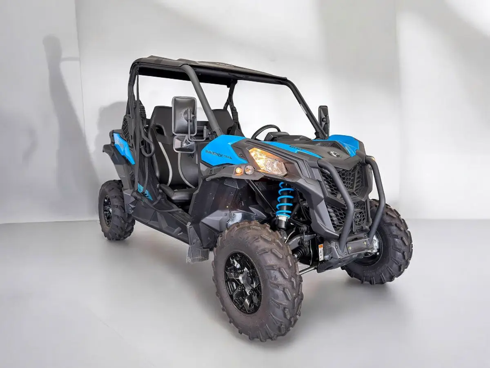

1 / 10El CAN-AM Maverick Trail DPS 800T Automático es una opción excepcional para aquellos que buscan aventura y versatilidad en un vehículo todo terreno . Este modelo en particular, con solo 483 kilómetros recorridos, prácticamente nuevo , ofrece la oportunidad perfecta para disfrutar de su potencia y maniobrabilidad.
Además, la oferta incluye un año de garantía que protege tu inversión, asegurándote tranquilidad ante cualquier imprevisto. El cambio de titularidad está incluido , facilitando el proceso de adquisición sin complicaciones adicionales. Todas las revisiones al día garantizan que el vehículo está en óptimas condiciones , listo para enfrentar cualquier desafío que se presente en el camino.
Sin duda, es una propuesta atractiva para los entusiastas del off-road que valoran la calidad y la seguridad . Equipamiento: Dirección asistida dinámica (DPS). Llantas de aluminio de 12pulgadas (30.5cm). Asientos ErgoPrint con toques de color. Velocidad máxima por encima de 60km/h Diferencial abierto frontal con control de tracción del freno(BTC) Control de frenos dinámico (ABS+HHC+HDC) Control de tracción dinámico (BTC+DTC) Etc
| Marca | Can-Am |
|---|---|
| Modelo | CAN-AM Maveric Trail DPS 800T |
| Año | None 2022 |
| Kilómetros | 483 km |
| Combustible | Gasolina |
| Cambio | Automático |
| Potencia | 483 CV |
| Garantía | 1 Año |
Quizá también te encaje